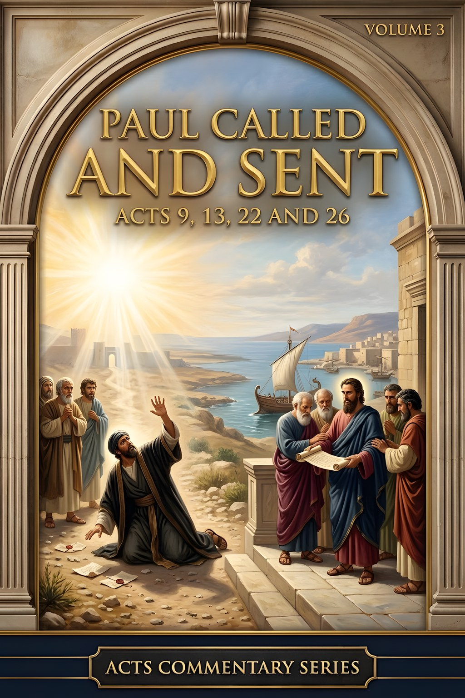
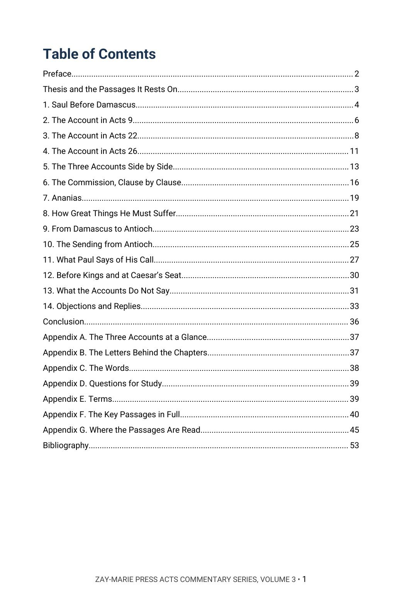
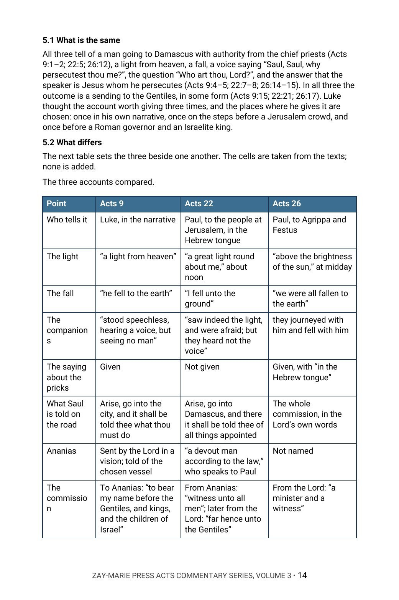
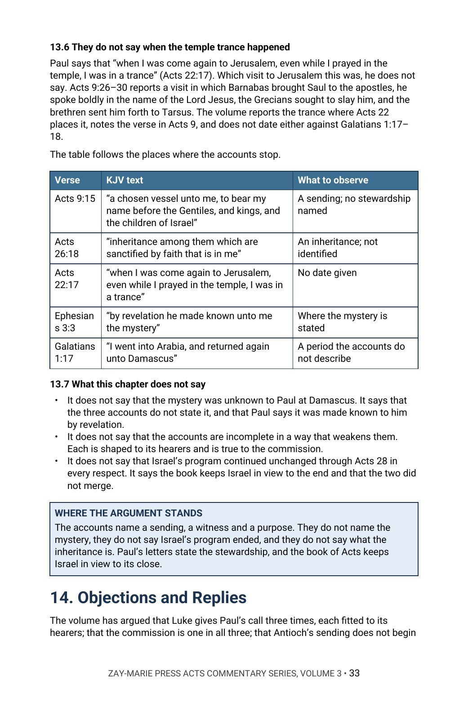

Paul Called and Sent
Acts 9, 13, 22 and 26
Luke tells the call of Paul three times. Is it one commission, or three?
In Acts 9 Luke tells the Damascus road in his own voice. In Acts 22 Paul tells it to a crowd at Jerusalem, and in Acts 26 to a king and a governor. The three tellings differ in the light, the fall, the voice, the companions and the part of Ananias. In Acts 13 the church at Antioch sends two men at the word of the Holy Ghost.
This commentary reports every difference as written and argues that the commission is one in all three, that Antioch sends and does not originate it, and that Paul’s letters, and not the Damascus accounts, state the stewardship and the mystery committed to him. In Chapter 14 it sets its reading beside modern writers who see it differently.
New to the framework? The Digital Studies teach the distinctions this volume relies on. Start with the Digital Studies →
A Commentary That Argues a Position
This volume does not survey how the three accounts of Paul’s call have been read and leave the choice to the reader. It states what the author believes the accounts teach, sets out the evidence account by account, hears the writers who disagree, and answers them from Scripture.
It is the third of five volumes in the Acts Commentary Series, each of which walks one section of the book in order. It is a different kind of book from the Digital Studies, which report what a passage says. Scripture is quoted from the King James Version throughout, and the writers named in Chapter 14 are described in the volume’s own words. Its own question is narrow: what does each of the three accounts add or leave out, and what does that show about the commission?
Related Reading
Acts Commentary, Volume 1 — Acts 1–8 The first eight chapters, ending with Saul consenting to Stephen’s death.
Prophecy & Mystery, Volume 2 — The Mystery Program The mystery hid in God and revealed through Paul, argued across the whole canon.
Study 14 — Acts 9 and the Beginning of Mystery A Digital Study reading Paul’s call as a marker in the overlap.
From the Road to the Letters
Three Accounts, One Call
Read Acts 9, 22 and 26 in turn, marking who tells each, to whom, and what each includes or leaves out.
The Differences Reported
Set the light, the fall, the voice, the companions and the part of Ananias in one view, and note where the text differs and where it does not.
The Commission Clause by Clause
Follow the Lord’s words about the Gentiles, kings and the children of Israel through all three accounts, and test whether the commission changes with the hearers.
From Damascus to Antioch
Trace what Saul does between the road and the sending, and read Acts 13:1–4 beside Paul’s own word in Galatians 1:1.
What Paul’s Letters Say
Read the places where Paul speaks of his call, the dispensation committed to him and the mystery, beside the words of the accounts.
Objections and Replies
Hear modern writers who read the accounts differently, and test each reply against the text.
Read the Word in Its Context
Acts 9:15
“But the Lord said unto him, Go thy way: for he is a chosen vessel unto me, to bear my name before the Gentiles, and kings, and the children of Israel.”
Acts 22:15
“For thou shalt be his witness unto all men of what thou hast seen and heard.”
Acts 22:21
“And he said unto me, Depart: for I will send thee far hence unto the Gentiles.”
Acts 26:16
“But rise, and stand upon thy feet: for I have appeared unto thee for this purpose, to make thee a minister and a witness both of these things which thou hast seen, and of those things in the which I will appear unto thee.”
Acts 13:2
“As they ministered to the Lord, and fasted, the Holy Ghost said, Separate me Barnabas and Saul for the work whereunto I have called them.”
Galatians 1:1
“Paul, an apostle, (not of men, neither by man, but by Jesus Christ, and God the Father, who raised him from the dead;)”
1 Corinthians 9:17
“For if I do this thing willingly, I have a reward: but if against my will, a dispensation of the gospel is committed unto me.”
Ephesians 3:3
“How that by revelation he made known unto me the mystery; (as I wrote afore in few words,”
What This Book Sets Out to Do
Luke gives the call three times, each fitted to its hearers, and one commission in all three.
The volume asks of each account who tells it, to whom, what it adds and what it leaves out, and whether the commission changes with the hearers.
Preview the Volume Before You Purchase
Click any page to enlarge it for reading.


Table of Contents
See the full order of the argument, from the Preface to the Bibliography.



The Three Accounts Compared
See the method: the three tellings set in one view, marking what each says and what it leaves unsaid.


Objections and Replies
See the modern voices named, and the answer to each.
A Full Commentary on Paul’s Call and Sending
54-Page Digital PDF
Cover and a fully numbered interior.
Fourteen Chapters
From Saul before Damascus to the objections and replies.
Objections and Replies
Modern voices named, with each objection answered from the text.
The Accounts Traced
Acts 9, 22 and 26 read in turn and then side by side, with the sending from Antioch.
Comparison Tables
The accounts, the commission and the passages set side by side.
Conclusion
The position restated in full, with a closing table.
Seven Appendices
The accounts at a glance, the letters behind the chapters, the words, study questions, terms, fifteen key passages in full and a verse-by-verse index of where the passages are read.
Bibliography
Every work cited, listed by author and title.
Paul Called and Sent
54-page digital PDF · For personal use